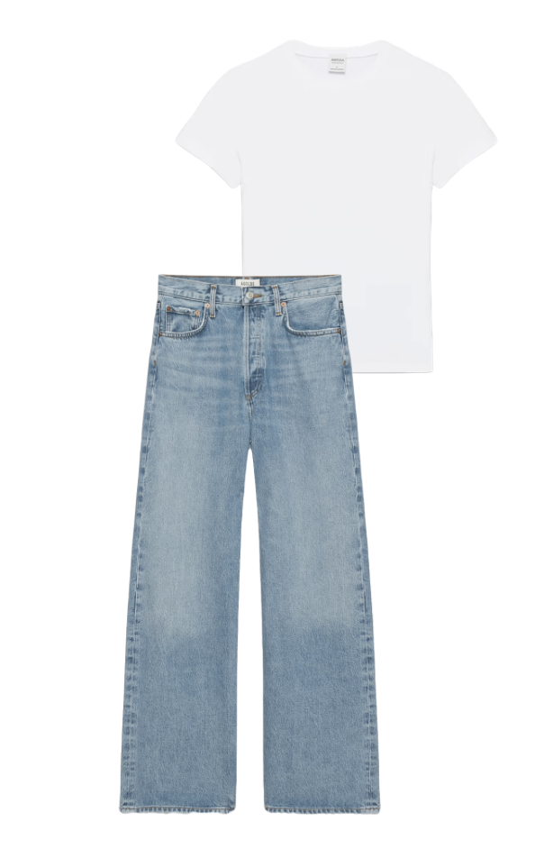
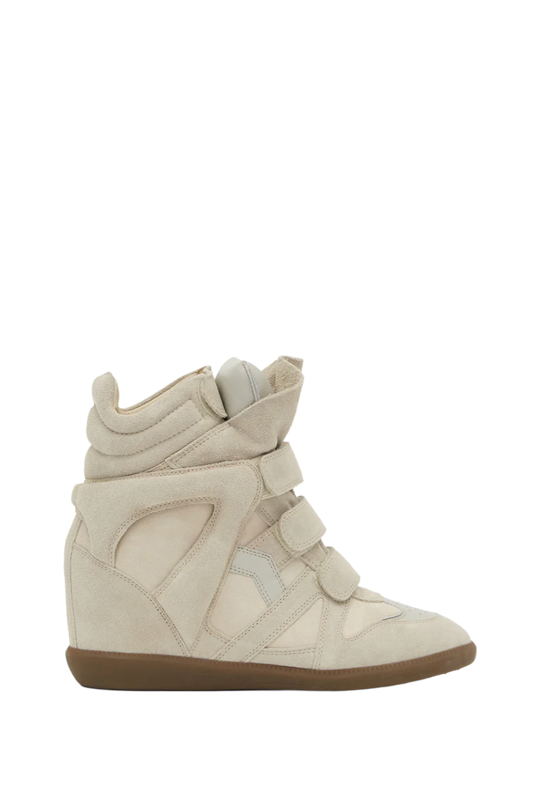

Let's get started

The first step to style an outfit instead of wearing it, is to add another layer over the top, as well as a pair of shoes.
A tip to creating a satisfying outfit is by using the "sandwich method" which is when the top of your outfit matches the very bottom,
with everything else in between. Make sure the colors all tie in together!
Click on a jacket to move onto the final step!

Add a brown suede jacket and matching Beckett sneakers to bring elevation and texture while keeping the outfit cohesive.
This choice is a simple, and neutral color combination that can be accessorized using both gold and silver metals.


Add a denim jacket in the same wash as your jeans to create a subtle Canadian tuxedo, finished with white sneakers for a clean, casual feel.
This choice is more focused on accessorizing with bold accents like black or brown.
Go back